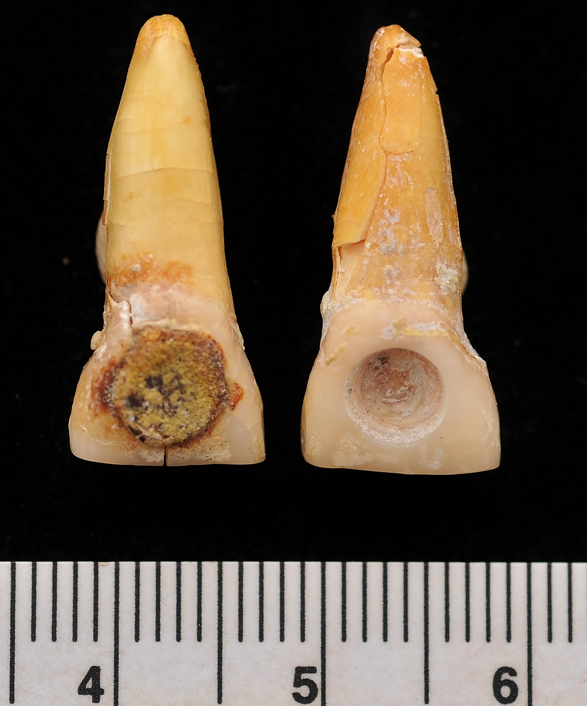

This page describes how I want to use GIS and geographical theory in order to better understand Maya settlement and disease patterns in northwestern Belize. Note the answers to the Lab Assignment are provided at the bottom of the page.


Structure 4C12 shown in Figure 4 is a common architectural style seen at Nojol Nah. In anthropological theory, the size, living area, and other architectural features are seen as a reflection of important social parameters such as the size and the nature of the group inhabiting the structure. These kinds of data have important implications for how ancient societies were organized, so one of my primary goals is to derive accurate geospatial data reflecting the distribution of Maya households across the landscape.


After over 100 years of research, people don't understand dental and cranial modification. Figures 5 and 6 show examples of dental modification. Various researchers have tried to link modification patterns with social status, sex, or geographic location, but to no avail. Perhaps GIS could help understand these trends. At La Milpa, which is another site shown on my maps and very close to Nojol Nah, researhers report only two incidences of inlaid teeth, whereas at Nojol Nah, we have found around ten instances of inlaid teeth. GIS theory could potentially explain the spatial and temporal distribution of dental and cranial modification.

Another bioarchaeological aspect that can be addressed with GIS is nutritionally related disease in ancient communities. Figure 7 shows a case of porotic hyperostosis from an individual from Nojol Nah; conditions such as porotic hyperostosis, high rates of dental cavities, and short stature have been associated with a maize-rich diet. There is a lot of debate on the nature of health of Maya people at the end of the Late Classic; whereas some researchers see the end of Maya society as a "collapse" associated with environmental degradation, others (especially osteologists working in Belize) see the terminal Maya populations as being relatively healthy. Again, use of GIS would be a good way to model Maya health trends, which is what I hope to do.
Lab Assignment 3, January 31, 2013
Question 1: What area do you want to depict in your map? Why?
My map depicts my archaeological study area in Belize, chosen because I have led excavations here since 2008 and will continue to do so for a while. I need different ways to visualize the geospatial data at the site. Specifically the site is called Nojol Nah (northern place) but the courtyard I am currently excavating is called El Palacio.
Question 2: What is the center point (latitude and longitude) of your area of interest?
The center point of this map is the Blue Creek site core. Although I work to the west of this site, Blue Creek was a small city and was the nucleus for settlement for a significant period of the Classic Maya occupation in the area. The coordinates are 17.869235N and -88.892481W.
Question 3: What style of map (roads, satellite, hybrid, terrain) is appropriate for your map? Why?
I chose the terrain option because this is a very important aspect of Maya settlement patterns. Typically the elite residences are located on the higher portions of the landscape, and these tend to be focused around low areas called bajos where they grew their crops. One major question in Maya settlement patterns is if the residences were temple-centric or bajo centric.
Question 4: What is the scale of your map (local, regional, continental, global)? How will this translate into your selection of appropriate default zoom level for your map?
The map is local in scale therefore I chose a relatively high zoom level (12); I want to show some of the region because archaeologicl sites are never in a vacuum and other nearby sites could have been very important in understanding the location of Nojol Nah. One problem that I am having is that the scale is so small that although I added several markers, they are so close together that they can hardly be distinguished. Also, although I have a lot of spatial data for Nojol Nah, until I learn more script then I can't add it and my map is a little boring right now.
Question 5: Embed a Google Map in the write-up based upon responses to Questions 1-4 above.